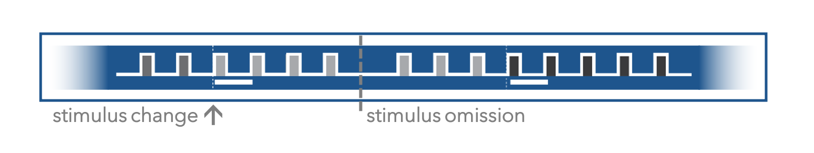

Visual Behavior Task Overview#
The Visual Behavior Ophys and Visual Behavior Neuropixels datasets are built around a visual change detection task. Measuring neural activity during goal directed behavior enables the joint analysis of brain and behavioral states during visual perception, decision making, and learning.
Running speed, licking, and reward delivery are measured during all behavior sessions. Pupil diameter and eye position are only measured during 2-photon or Neuropixels recording sessions.

Change Detection Task#
The task consists of a series of sequentially presented visual stimuli and mice learn to report changes in stimulus identity by licking a spout to earn water rewards. In the final stage of the task, when neural activity measurements are made, natural scene images stimuli are presented for 250 milliseconds followed by a 500 millisecond gray screen interval. This requires that mice compare the current stimulus with the one they saw prior to the gray screen interval, which adds a working memory component to the task. During neural recordings, but not during training, 5% of non-change stimulus presentations are randomly omitted, interrupting the expected stimulus cadence. The stimuli and task parameters used during behavioral training are described in the Behavior Training section below.

In this task, the start of a trial is not explicitly cued to the mouse, and the times of image changes are not predictable. The stimuli appear as a continuous stream, with a variable number of presentations of a given image before the identity of the stimulus changes.
Task Flow and Trial Types#
On each trial of the task, a change time is selected from a geometric distribution between 4 and 12 flashes after the time of the last change or the last lick. On “go” trials, the image identity will change at the selected change time. If the mouse licks within the 750 millisecond response window, the trial is considered a hit and a reward is delivered. If the mouse fails to lick after the change, the trial is considered a miss. If the mouse licks prior to the scheduled change time, the trial is aborted and starts over again, using the same change time for up to 5 trials in a row. This is to discourage false alarm licks and help shape the behavior, by requiring that mice wait until the change time to respond and get a reward.

On “catch” trials, a change time is drawn but the image identity does not change. If the mouse licks within the reward window following the sham change, the trial is considered a false alarm and no reward is delivered. Correctly witholding a lick on a catch trial is a correct reject. This definition of a catch trial is a conservative one, and only considers the non-change stimulus presentations that are drawn from the same distribution as the change times to be catch trials. A less restrictive definition could consider every non-change stimulus presentation as a catch. aborted trials can also be considered catch trials, as they represent false alarm licks prior to the scheduled change time.

On change trials, a 3 second “grace period” occurs during which licking behavior does not influence the task flow, to allow time for mice to consume the reward.

As a result of the above contingencies, the number of times a given image is shown is determined by two things:
The distribution that the change times are drawn from
Whether or not the mouse emits a false alarm lick before the image change is shown
Any false alarm licks (licks that occur outside of the 750 ms reward window and 3 second consumption window following an image change) will abort the trial and the same image will continue to be repeated for the designated number of presentations selected for that trial. As an example, if the change time drawn for a given trial is 8 flashes, and the mouse emits a false alarm lick after 4 flashes, the trial is aborted and the same image continues to be shown for 8 more flashes, giving a total of 16 image repetitions before a change will occur. This serves to discourage false alarms by requiring that mice withhold licking in order to see an image change and have an opportunity for a reward.
Behavior Training#
Mice learned the change detection task through a series of training stages, with transitions between stages determined by specific advancement criteria.
On the very first day of training, mice observe changes in the orientation of full field static grating stimuli and are automatically rewarded at the time of the orientation change. This serves to form an association between stimulus changes and rewards, and to help the mice learn to interact with the lick spout. On the second day, rewards are contingent on the mouse licking the reward spout after the stimulus changes. In the next stage, a 500ms inter stimulus interval period with mean luminance gray screen is added between 250ms stimulus presentations, incorporating a short-term memory component to the task.
Once mice successfully and consistently performed orientation change detection with flashed gratings, they moved to the image change detection version of the task. During image change detection, 8 natural scene images were presented during each behavioral session, for a total of 64 possible image transitions. When behavioral performance again reached criterion (d-prime >1 for 2 out of 3 consecutive days), mice were transitioned to the 2-photon imaging or Neuropixels recording stage in which they performed the task during simultaneous measurement of neural activity and behavior.
During recording sessions (but not during training), stimulus presentations are randomly omitted with a 5% probability, resulting in an extended gray screen period between two presentations of the same stimulus and disrupting the expected cadence of stimulus presentations. The change and pre-change stimulus presentations are never omitted.

Visual Stimuli#
Mice are initially trained with high contrast, full field, square wave static grating stimuli that change in orientation and phase. These simple stimuli were used to help mice learn the initial task rules with highly salient, easy to detect stimulus changes.
After learning the task with gratings, mice transitioned to performing the task with natural image stimuli. 8 images were shown in each session.
The Visual Behavior Ophys project used different image sets in different groups of mice. Three groups of mice, indicated by their project_code, also called “dataset variant”, were shown image sets A and B. In some mice, image set A was used during training, and in other mice, image set B was used during training. This was done to provide a control for the effects of novelty on visual responses (i.e. whether the image set was seen during training or not) versus the effects of the stimulus features themselves (some images may drive stronger activity than others). See the Visual Behavior Ophys page for more details on the different cohorts and stimulus configurations.

The Visual Behavior Neuropixels dataset used a distinct stimulus configuration that included a pair of shared images between the training set, image set G, and the novel image set, image set H. One of the Visual Behavior Ophys dataset variants, indicated by the project_code VisualBehaviorMultiscope4areasx2d used this same set of images, allowing comparison across the two datasets.

The inclusion of 2 shared images between the familiar and novel image sets allows for examination of the effects of stimulus context on learned sensory responses. A key question is - do mice (behaviorally, or neurophysiologically) treat the two shared images the same, regardless of whether they are intermixed with other familiar stimuli versus when they are intermixed with novel stimuli?
Stimulus Novelty#
There are three different types of sessions with natural images, depending on which images were shown during training and which were shown during recording sessions. Assuming 1-8 represent familiar images (shown during training) and a-h represent novel images (shown for the first time during recordings), a given session can be one of the following types:
Familiar only sessions (ex: 1111444443333666666, where each number represents a unique familiar image)
Novel only sessions (ex: aaaaaaggggeeeebbb, where each letter represents a unique novel image)
Interleaved familiar and novel sessions (ex: 11111bbbbb22222fffffffbbbbb, where numbers indicate familiar and letters indicate novel images)
In the first two session types, the transitions at image changes will always be a change from a familiar image to another familiar image, or from a novel image to another novel image. In the third type of session, you can get familiar-familiar transitions, novel-novel transitions, familiar-novel transitions, and novel-novel transitions.
In the Visual Behavior Neuropixels dataset, mice are trained with familiar only sessions (type 1 described above), and tested with interleaved familiar and novel sessions (type 3 described above).
In the Visual Behavior Ophys dataset, some cohorts of mice were trained with familiar only and tested with novel only sessions, and others were trained with familiar only and tested with interleaved familiar and novel images. This is described under the Dataset Variants section of the Visual Behavior Ophys page, and in the schematic below which describes the 2-photon imaging and stimulus configurations for each cohort of mice.

Image sets A and B (red and blue) are always familiar only or novel only, image set G (green) is familiar only, and image set H (purple) is interleaved familiar and novel (6 novel images, 2 familiar images shared with image set H).
The Visual Behavior Neuropixels dataset used the same stimulus configuration as the 4th cohort of mice in the Visual Behavior Ophys dataset (train with image set G and test with interleaved image set H).
These experimental design choices result in the dataset containing two types of stimulus novelty – 1) novelty based on local context (i.e. image changes), and 2) novelty in an absolute sense (i.e. images that were never seen before the current session). One could also consider image omissions as a third type of novelty.
Session Types#
The stages of behavioral training and different types of neurophysiology sessions are described by their session_type. The session_type indicates whether the session occured during training or during neural activity measurements, as well as what stimulus was used and whether the session was active behavior or passive viewing session in the case of Visual Behavior Ophys sessions (Visual Behavior Neuropixels sessions have active and passive blocks in the same session).
Parsing the session_type names:
The first component of the session_type tells you whether the session was during TRAINING in the behavior facility, during OPHYS under the two photon microscope, or during EPHYS sessions with Neuropixels recordings (examples: OPHYS_1_images_A, TRAINING_5_images_B_handoff_ready, EPHYS_2_images_H)
The second component of the session_type is a number that tells you the order in the training procedure or the intended order of the ophys imaging sequence (examples: OPHYS_4_images_B, TRAINING_2_gratings_flashed). For ophys sessions, you can also use the session_number column of the ophys_experiment_table or ophys_session_table.
Note that ophys sessions can sometimes occur out of order due to QC failures and subsequent retakes, so the date_of_acquisition, as well as prior_exposures_to_session_type and prior_exposures_to_image_set columns of the metadata tables should be used to determine the precise order of sessions for each mouse.
The third component of the session_type tells you which image set was shown during that session (examples: OPHYS_2_images_B, EPHYS_1_images_G). You can also use the image_set column of the ophys_experiment_table, ophys_session_table, or ecephys_session_table.
The final component of the session_type provides additional information that is unique to the session, such as whether it was a passive session during ophys or a habituation session, or whether the mouse was in the handoff_ready state during training, or whether the reward volume was changed (examples: TRAINING_3_images_G_10uL_reward, OPHYS_2_images_B_passive).
Task Parameters#
Task parameters for each session_type for VisualBehaviorOphysProjectCache datasets:
Note that the letter X is used here instead of the exact image set name because the Visual Behavior Ophys project used different image sets in different mice. See the Visual Behavior Ophys page for more information on dataset variants.
Task parameters for each session_type for VisualBehaviorNeuropixelsProjectCache datasets:
As you can see, there are some unique features of the early TRAINING sessions.
The very first behavior session the mice ever experience (TRAINING_0_gratings_autorewards_15min) is an associative pairing procedure where changes in static grating stimuli are automatically rewarded, without requiring the mice to lick prior to reward delivery. This initial session helps to teach the mice that changes are associated with rewards.
All subsequent sessions were operant behavior training sessions where reward delivery was contingent on the mice licking the reward spout to report that they had observed a change in image identity.
The second training stage (TRAINING_1_gratings) also used grating stimuli, but required mice to lick to earn rewards.
The third training stage (TRAINING_2_gratings_flashed) introduced a 500 millisecond gray screen interval in between changes in grating orientation. This requires the mouse to remember what was shown previously and perform a comparison with a short term memory delay. In this case, the question posed to the mice is - “is what i am seeing now the same thing that i saw 500 milliseconds ago?”
Once mice consistently perform the task up to criterion level with gratings, they transition to natural scene images, and all subsequent sessions are performed with image change detection.
In the TRAINING_5 stage, mice must consistently perform the task at criterion level (>d-prime of 1) for at least 2 out of 3 days to graduate to the handoff_ready state. At this point, mice move on to either Ophys or Ephys recordings once there is availability on the recording systems for a new mouse. Thus, the time spent in TRAINING_5 is not contingent on the animals behavior as it was for all previous stages. Instead, operational considerations determine when mice move from TRAINING_5 to the neural recordings stage.
Before the neural recordings begin, the mice spend several days habituating to performing the task on the 2-photon or neuropixels system, to get used to the different sights, sounds, and smells that are present compared to when they were training in the behavior facility. These session_types have the word habituation in the name.
After habituation, mice progress through the subsequent stages roughly in order, regardless of task performance. Occasionally specific session_types are re-acquired if the initial attempt did not pass quality control criteria. The goal is to acquire at least one successful session of each post-training session_type for OPHYS and EPHYS for each mouse.
For the Visual Behavior Neuropixels dataset, there are only 2 EPHYS session types, one with image set G and one with image set H. Each session has an active behavior block, followed by a passive replay of the same stimulus sequence observed during behavior, but with the lick spout retracted.
For Visual Behavior Ophys, there are 6 OPHYS session types, aimed at recording the same population of neurons across multiple days with familiar and novel images, as well as passive viewing and active behavior on different days. Often there can be multiple sessions acquired for each of the 6 session_types due to quality control and retakes. QC is performed on a session wise basis and an imaging plane by imaging plane basis, so if one or two imaging planes of a multi-plane recording session fails to meet QC criteria, the entire session type can be recorded again on a subsequent day. This ensures that the dataset for each mouse is over-complete, rather than lacking in certain dimensions.